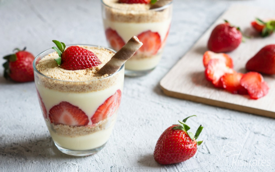

Cilekli Magnolia

Çilekli Magnolia Tarifi İçin Malzemeler
- 2 paket Eti Burçak bisküvi
- 10-15 adet çilek
Muhallebisi İçin;
- 1 litre süt
- 1 su bardağı toz şeker
- 2 adet yumurta sarısı
- 1 Türk kahvesi fincanı mısır nişastası
- 2 yemek kaşığı tepeleme un
- 1 kutu krema (200 ml)